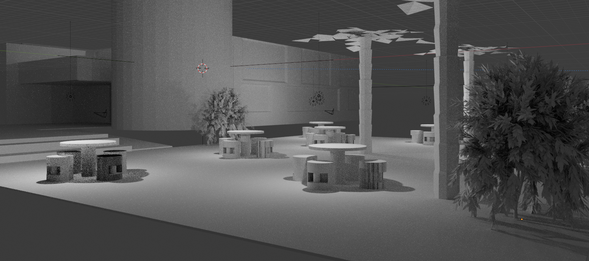
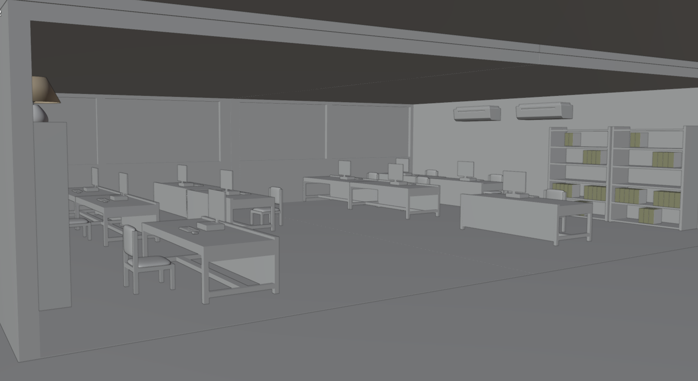

Categoría: Visualización Arquitectónica / Interiorismo
Diseño y visualización de espacios interiores. En este proyecto, mi objetivo principal fue crear ambientes que no solo sean estéticos, sino que transmitan paz y serenidad. Utilicé técnicas de iluminación global para destacar colores claros y acabados acogedores, logrando un equilibrio visual que invita al descanso y la armonía dentro del hogar.

